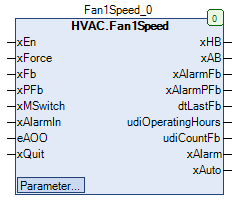

Fan1Speed (FB)¶
FUNCTION_BLOCK Fan1Speed
Short Description¶
Control of a single-stage fanAdditional functions: low air pressure monitoring, operation monitoring, repair switch, manual override, status displayTypical application: control of a room - exhaust fan
Portrayal¶

Interfaces¶
Inputs¶
Name Datatype
Range
Init-Value
Functional Description
xEn BOOL Anforderung des Ventilators xForce BOOL FALSE Forced override after manual override
xFb BOOL Fan operating message
xPFb BOOL Reporting the air shortage situation
xMSwitch BOOL TRUE Repair switch message
xAlarmIn BOOL Alarm message of the fan
eAOO HVACTYPES.eManBin HVACTYPES.eManBin.Auto, HVACTYPES.eManBin.ManOff, HVACTYPES.eManBin.ManOn HVACTYPES.eManBin.Auto Operating mode of manual override - Hardware
xQuit BOOL FALSE Reset of alarm messages ( operation monitoring, air shortage monitoring )
Outputs¶
Name Datatype
Range
Init-Value
Functional Description
xHB BOOL Enable - Fan after manual override
xAB BOOL Enable - Fan before manual override
xAlarmFb BOOL Fault message of the operational monitoring
xAlarmPFb BOOL Störmeldung der Luftmangelüberwachung dtLastFb DATE_AND_TIME Date / time of last fan operation
udiOperatingHours UDINT Operating hours of the circulation pump
udiCountFb UDINT Number of activations of the circulating pump
xAlarm BOOL collective alarm message
xAuto BOOL Collective message of Automatic operation
Setpoints / Parameters¶
Name Datatype
Range
Init-Value
Functional Description
udiPFbControlTime UDINT 1 to 3600s
60s Signal delay of the low air pressure monitor
xPFbControl BOOL TRUE Release of air shortage monitoring
xAlarmControl BOOL TRUE Influence of xAlarm on xAB
udiFbControlTime UDINT 0 ... 300s 60s Signal delay of operation monitoring
xFbControl BOOL TRUE Enable / disable operation monitoring
xForceOption BOOL FALSE Status of output xHB with forced override
eManModeB eMANBIN eMANBIN.Auto, eMANBIN.ManOff, eMANBIN.ManOn eMANBIN.Auto Operating mode of manual override for the xHB digital output
Functional Description¶
General¶
Enable - Fan before manual override xAB¶
Enable - Fan after manual override xHB¶
xAB eManModeB xForce xForceOption xHB Notes
FALSE eMANBIN.Auto FALSE X FALSE Manual override module in automatic mode
TRUE eMANBIN.Auto FALSE X TRUE Manual override module in automatic mode
X eMANBIN.ManOn FALSE X TRUE Manual override module in manual mode On
X eMANBIN.ManOff FALSE X FALSE Manual override module in manual mode Off
X X TRUE FALSE FALSE Forced override Off
X X TRUE TRUE TRUE Forced override On
Repair switch message xMSwitch¶
Forced override xForce¶
Operating hours and switch-on procedures¶
Write access to the counter readings
Date / time of the last operation of the fan dtLastFb¶
Operation monitoring¶
low air pressure monitoring¶
Collective alarm signal xAlarm¶
Collective message automatic mode xAuto¶
Visualization¶
Codesys¶
- InOut:
Scope Name Type Initial Comment Input xEn BOOL Anforderung des Ventilators xForce BOOL FALSE Forced override after manual override
xFb BOOL Fan operating message
xPFb BOOL Reporting the air shortage situation
xMSwitch BOOL TRUE Repair switch message
xAlarmIn BOOL Alarm message of the fan
eAOO eManBin HVACTYPES.eManBin.Auto Operating mode of manual override - Hardware
xQuit BOOL FALSE Reset of alarm messages ( operation monitoring, air shortage monitoring )
Output xHB BOOL Enable - Fan after manual override
xAB BOOL Enable - Fan before manual override
xAlarmFb BOOL Fault message of the operational monitoring
xAlarmPFb BOOL Störmeldung der Luftmangelüberwachung dtLastFb DT Date / time of last fan operation
udiOperatingHours UDINT Operating hours of the circulation pump
udiCountFb UDINT Number of starts of the ventilator
xAlarm BOOL collective alarm
xAuto BOOL Collective message of Automatic operation
Input udiPFbControlTime UDINT 60 Signal delay of the low air pressure monitor
xPFbControl BOOL TRUE Release of air shortage monitoring
xAlarmControl BOOL TRUE Influence of xAlarm on xAB
udiFbControlTime UDINT 60 Signal delay of operation monitoring
xFbControl BOOL TRUE Enable / disable operation monitoring
xForceOption BOOL FALSE Status of output xHB with forced override
eManModeB eMANBIN eMANBIN.Auto Operating mode of manual override for the xHB digital output